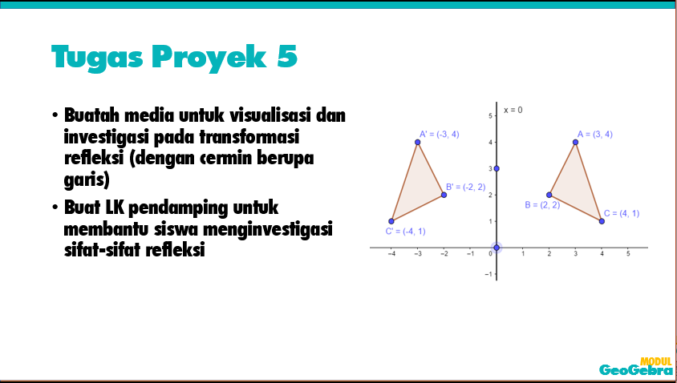

Modul Bagian 5
5.1 Pendahuluan
Bagian 5 ini akan membahas tool-tool GeoGebra dasar yang terkait dengan transformasi geometri yaitu pencerminan, dilatasi, translasi dan rotasi serta pemanfaatannya untuk membuat media pembelajaran. . Untuk memulai pembelajaran, silahkan menyimak video pengantar berikut ini. Setelah itu silahkan melanjutkan dengan menyimak video tutorial pada materi belajar.
Prasyarat untuk mengikuti aktivitas ini adalah Anda harus sudah menguasai tool GeoGebra terkait titik, garis, poligon, lingkaran, garis sejajar dan tegaklurus serta sudut
5.2 Aktivitas Belajar
Refleksi/Pencerminan
Dilatasi, Translasi, Rotasi
Pembuatan media pada transformasi
5.3 Tugas Latihan
Untuk melatih kemampuan dalam memanfaatkan software GeoGebra dengan tool dan fitur yang telah dipelajari, silakan mengerjakan tugas-tugas latihan berikut. Sedapat mungkin gunakan kemampuan yang telah dipelajari untuk menyelesaikan tugas dan jika ada kesulitan, silahkan memeriksa dan memelajari kembali tutorial yang ada. Jika masih belum menemukan solusi, silahkan mengakses bagian Umpan Balik untuk mendapatkan petunjuk yang lebih rinci.
5.4 Tugas Proyek
Tugas proyek merupakan tugas yang merangkum tugas-tugas dan kompetensi yang telah dipelajari dan disertai dengan ide penerapan media dalam pembelajaran. Silahkan melihat dan mereviu kembali materi dan tugas yang sebelumnya telah dipelajari untuk memeroleh ide dan solusi dalam menyelesaikan tugas ini.
5.5 Umpan Balik
Tugas latihan yang belum dapat diselesaikan kemungkinan dikarenakan menemui kendala pada tahapan tertentu. Dapatkan ide atau petunjuk dalam menyelesaikan tugas dengan menyimak video umpan balik berikut.
5.6 Evaluasi
Evaluasi dalam modul ini menggunakan teknik evaluasi diri dengan mengerjakan kuis serta mengisi form penilaian diri terkait pencapaian hasil belajar.
Kuis
Penilaian Diri
Pada sesi ini Anda telah memelajari beberapa hal. Tentukan kompetensi yang telah Anda kuasai dari sesi ini dengan menentukan nilai skornya di form berikut. Klik tombol Submit untuk melihat nilai total.Keterangan skor: 1=Sangat Tidak setuju;2=Tidak setuju; 3=Kurang setuju; 4=Setuju; 5=Sangat setuju
5.7 Rangkuman dan Tindak Lanjut
Pada Bagian 5 ini telah dipelajari beberapa tool dan fitur dalam GeoGebra yang terkait transformasi geometri, yaitu pencerminan, dilatasi, translasi dan rotasi serta pemanfaatannya untuk membuat media pembelajaran.
Sebagai tindak lanjut, silahkan merancang media berbasis GeoGebra terutama untuk topik-topik matematika yang diajarkan di kelas. Untuk memelajari tool dan fitur GeoGebra lebih lanjut, silahkan menuju ke Bagian 6 dari modul ini.